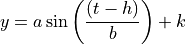

Time-varying inlet velocity¶
It is straightforward to create models with time-varying boundary conditions. In this example, we set up an array of values to use for the inlet flow velocity, depending on the time of the model (i.e., a timeseries).
In implementation, because we don’t know the timestep of the model before creating it, we interpolate the actual inlet flow velocity from the boundary condition timeseries.
Define the boundary condition¶
First, let’s set up the boundary condition array we want to use. We’ll set this up in a function, so that it can be called from the model subclass, as well as here for plotting.
def create_velocity_array(end_time, a=1, b=5e4, h=3.2, k=2):
"""Create velocity timeseries.
"""
_time = np.linspace(0, end_time, num=1000)
_velocity = a * np.sin((_time - h)/b) + k
return _time, _velocity
The function we define takes the end_time of the model run, as well as some shape parameters, and computes according to:

where  is the time array in seconds.
We can inspect the result of this function, as it will be called in the model subclass below.
is the time array in seconds.
We can inspect the result of this function, as it will be called in the model subclass below.
end_time = 86400 * 100
_time_array, _velocity_array = create_velocity_array(
end_time)
# make a plot of the boundary condition
fig, ax = plt.subplots()
ax.plot(_time_array, _velocity_array)
ax.set_xlabel('time (seconds)')
ax.set_ylabel('inlet velocity (meters/second)')
plt.show()
{kind=link}
{kind=link}
Define the model subclass¶
We define a model subclass to handle the changing boundary condition:
class ChangingVelocityModel(pyDeltaRCM.DeltaModel):
"""Model with changing flow velocity.
Create a model that changes the inlet flow velocity throughout the run.
In this example, the velocity is changed on each timestep, and the value
it is set to is interpolated from a **predetermined timeseries** of
velocities.
"""
def __init__(self, input_file=None, end_time=86400, **kwargs):
# inherit from the base model
super().__init__(input_file, **kwargs)
# set up the attributes for interpolation
self._time_array, self._velocity_array = create_velocity_array(
end_time) # use default shape parameters for the array
def hook_solve_water_and_sediment_timestep(self):
"""Change the velocity."""
# find the new velocity and set it to the model
self.u0 = np.interp(self._time, self._time_array, self._velocity_array)
# update other boundary conditions using u0
self.create_boundary_conditions()
# log the new value
_msg = 'Changed velocity value to {u0}'.format(
u0=self.u0)
self.log_info(_msg, verbosity=0)
and then simply run with:
mdl = ChangingVelocityModel(end_time=end_time)
while mdl.time < end_time:
mdl.update()
Note
For information on updating boundary conditions after changing certain model parameters see Updating model boundary conditions.